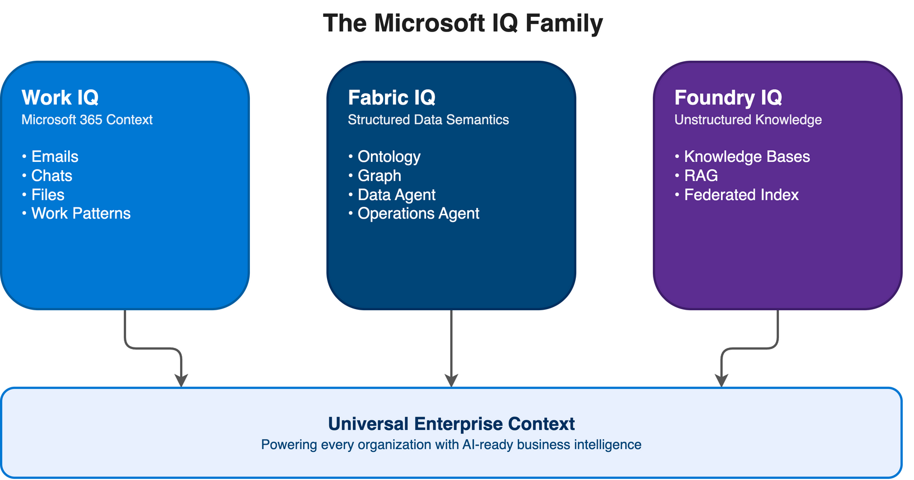
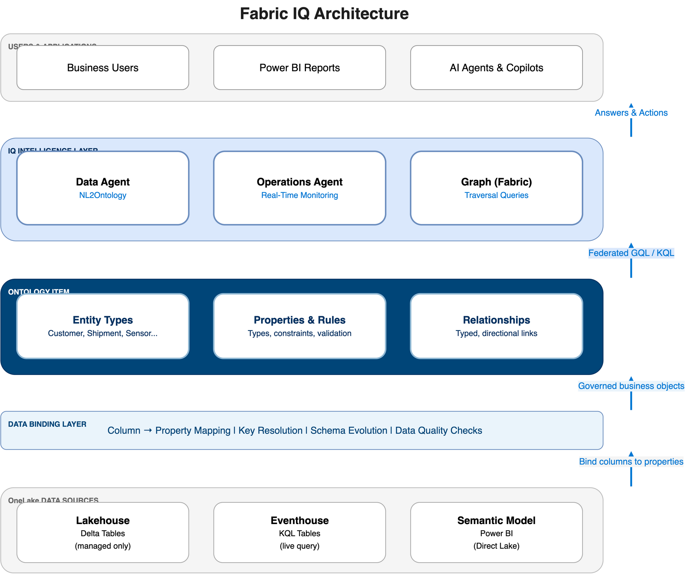
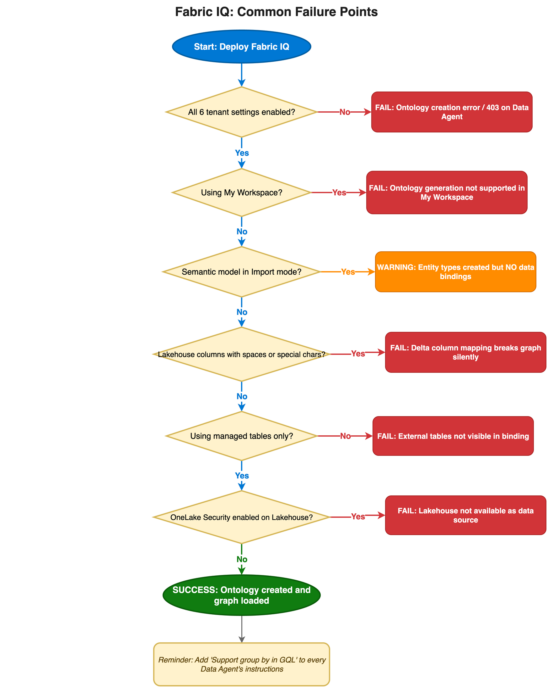

If you've spent the last year building on Microsoft Fabric and assumed "Fabric IQ" was just another name for Copilot in Fabric, you're not alone — and you're wrong. Fabric IQ is something fundamentally different, and understanding that difference is the first thing you need to do before touching the deployment guide.
This article covers what Fabric IQ actually is, how its architecture works, how to deploy it step by step, and — most importantly — 12 specific pitfalls that will silently break your implementation if you don't know to look for them. All sourced directly from the official docs and verified as of early 2026.
Fabric IQ is in public preview as of early 2026. The core ontology item and graph are functional and worth learning now. However: no versioning/rollback, some known query bugs, and capacity cost is not yet well-documented. If your project needs GA stability, monitor the Fabric What's New page. If you're piloting, prototyping, or building internal tooling — this article is for you.
1. What Is Fabric IQ? (And What It Isn't)
Let's clear up the naming confusion first.
Copilot in Fabric is the AI assistant embedded inside individual Fabric experiences — the chat panel in a Notebook, the NL-to-SQL bar in a Lakehouse, the natural language query tool in a KQL Queryset. It has been available since 2024 and is now generally available on all paid Fabric capacities (F2 and above). It consumes Fabric Capacity Units (CUs) and routes your natural language to Azure OpenAI to produce SQL, DAX, or KQL suggestions.
Fabric IQ is a separate, newer workload announced at Microsoft Ignite 2025 by Amir Netz, Fabric's Chief Architect. It is currently in public preview. Rather than being an AI assistant, IQ is an enterprise semantic layer — a workload for defining a shared business vocabulary and binding it to your real data, so that both humans and AI agents reason about your data using business concepts rather than raw table names.
The official Microsoft definition puts it this way:
"IQ (preview) is a workload for unifying data sitting across OneLake and organizing it according to the language of your business. The data is then exposed to analytics, AI agents, and applications with consistent semantic meaning and context."
Think of it this way: Copilot in Fabric answers questions. Fabric IQ teaches the system what your business means. Once IQ knows that a "Shipment" entity has a relationship to a "Temperature Sensor" entity via a "Cold Chain" link, Copilot and agents can answer questions about cold chain breaches without you needing to explain the join logic every time.
The Broader IQ Family
Fabric IQ doesn't stand alone. Microsoft announced three components under the "IQ" umbrella at Ignite 2025, forming what they describe as a "Microsoft Cloud-wide initiative to power every organization with universal enterprise context":
- Work IQ — brings Microsoft 365 context (emails, chats, files, work patterns) into Microsoft 365 Copilot
- Fabric IQ — adds semantic meaning to structured enterprise data in OneLake
- Foundry IQ — provides reusable knowledge bases for AI agents using RAG (Retrieval-Augmented Generation) over unstructured data
In practice, Fabric IQ rarely operates in isolation — agents built on top of it can pull context from Foundry IQ (unstructured documents) and Work IQ (M365 activity) simultaneously, giving a single agent access to structured, unstructured, and collaboration data in one response.

2. Is Fabric IQ Right For You?
Before investing in an IQ deployment, it's worth asking whether an alternative you already have would do the job better. Fabric IQ is a compelling tool in the right context, but it is not a universal replacement for existing semantic layers or BI tools.
| Alternative | When it wins over Fabric IQ |
|---|---|
| Power BI semantic model (standalone) | You need KPIs, measures, DAX, and governed BI reports — IQ doesn't replace this |
| dbt semantic layer | Your team lives in SQL/dbt and wants semantic definitions portable across tools outside Fabric |
| Genie Spaces (Databricks) | Your data estate is primarily Databricks, not Microsoft Fabric |
| Atscale / other universal semantic layers | You need vendor-neutral semantic definitions that work across cloud platforms |
| Fabric IQ wins when... | You want cross-domain reasoning (Lakehouse + Eventhouse + Power BI), AI agent grounding, and graph traversal — all governed in one place within Fabric |
If you already have a well-built Power BI semantic model and your main goal is better BI reports, stop here — IQ is overkill. IQ adds value when you need AI agents to reason across multiple data sources using business concepts, or when relationship traversal (e.g., Customer → Order → Shipment → Sensor) matters more than dimensional aggregation.
3. Architecture Under the Hood
The Five Items
Fabric IQ is not a single product — it is a workload composed of five items that can work together or independently:
| Item | Role | Also part of |
|---|---|---|
| Ontology (preview) | Enterprise vocabulary + semantic layer. Defines entity types, properties, relationships. Binds to OneLake data. | IQ only |
| Graph in Microsoft Fabric (preview) | Native graph storage + compute for nodes/edges. Powers traversal queries. | Real-Time Intelligence |
| Fabric data agent (preview) | Conversational Q&A over ontology via NL2Ontology. | Data Science |
| Operations agent (preview) | Real-time monitoring + automated action agent. Watches Eventhouse streams. | Real-Time Intelligence |
| Power BI semantic models | Curated analytics model for KPIs and visuals. Can auto-generate an ontology from an existing model. | Power BI |
The most important item is the Ontology. It is the core semantic foundation that all the others plug into. You can use Graph without an Ontology (for pure graph analytics), but you cannot use Fabric IQ as an intelligence platform without it.
How Data Flows Through IQ
Here is the end-to-end data flow through the IQ workload. A key architectural detail: ontology queries are federated — the NL2Ontology layer automatically routes queries to the most efficient underlying engine (GQL for graph traversals, KQL for time-series from Eventhouse). You don't manage this routing manually.

The Ontology Item in Detail
The Ontology item is best understood through its four building blocks:
Entity types are the reusable logical models of real-world concepts. A Shipment entity type standardizes the name, identifier, properties, and constraints for that concept once, so every team means the same thing when they say "shipment." This eliminates conflicting column-level definitions across a dozen different tables built by a dozen different teams.
In practice: treat entity types like API contracts. The name you give them today — Customer, Shipment, Sensor — is what your AI agents will use to answer questions. Get the names right before you bind data.
Properties are named facts about an entity, with declared data types. They enforce consistent types, units, and naming — the Shipment.status property always means the same thing, comes from the same binding, and can be validated for null or range constraints at the ontology layer.
Relationships are typed, directional links between entity types. A Customer places Order relationship with a Many-to-One cardinality makes context explicit and reusable. Traversal queries like "find all shipments exposed to a cold-chain breach in the last 24 hours" become possible without custom join logic.
Data bindings connect ontology definitions to real data in OneLake. A binding maps columns from a Lakehouse delta table or Eventhouse KQL table to entity properties, creating governed business objects from raw rows.
In practice: binding is where most implementations stall. Start with one entity type, bind it, refresh the graph, and verify instance counts before adding more.
Updates in upstream data sources (new rows in Lakehouse tables, new Eventhouse events) require a manual or scheduled graph refresh before they are visible in the Ontology item. This is a significant consideration for near-real-time use cases.
4. Capabilities Breakdown
NL2Ontology — Natural Language Over Business Concepts
Unlike Copilot in Fabric (which translates NL to SQL/DAX/KQL against raw table schemas), Fabric IQ's Data Agent uses NL2Ontology: your natural language question is converted into a structured ontology query, which is then automatically translated to the appropriate query language (GQL or KQL) and executed.
The difference matters for query quality. With Copilot in Fabric, you're at the mercy of your table names and column names. With NL2Ontology, you query using business terms defined in your ontology — "what is the top product by revenue across all stores?" — and the system handles the mapping to the underlying data.
In practice: NL2Ontology works significantly better when entity names and property descriptions are human-readable. A property named net_revenue_usd_adj will confuse the model; NetRevenue with a description "Revenue after discounts, in USD" will not.
Graph-Powered Cross-Domain Reasoning
The Graph item brings path-finding and dependency analysis to your business data. Once your ontology is bound to data, you can ask questions that would require five joins in SQL: "Find all orders placed by customers in Region A that were shipped on routes with a temperature breach in the last week." The graph encodes the connection from Order → Shipment → Route → TemperatureSensor → TelemetryReading so these traversals are native operations.
Operations Agent — From Monitoring to Action
The Operations Agent connects to your Eventhouse streaming data and can be configured to monitor real-time conditions and trigger actions when business rules are met. Rather than a static dashboard that someone has to watch, the Operations Agent actively reasons about the ontology's rules and alerts or invokes workflows automatically.
Generating an Ontology from an Existing Semantic Model
If you already have a well-structured Power BI semantic model, you can generate an ontology from it automatically. This is the recommended starting point for most enterprises — you don't need to rebuild your business vocabulary from scratch. The auto-generation imports your tables, relationships, and measures into ontology entity types and relationships.
Auto-generation only works if your semantic model is not in "My Workspace" and is not in Import mode. Both of these will silently produce an empty ontology. See the Pitfalls section for details.
5. Step-by-Step Deployment Guide
This section walks through the full deployment of Fabric IQ from a blank Fabric workspace to a working Data Agent answering natural language questions about your business data.
Prerequisites
- A paid Microsoft Fabric capacity (F2 or higher). Fabric IQ is included with existing subscriptions at no additional licensing cost.
- Fabric administrator access to the tenant settings in the Admin Portal.
- A workspace with a Fabric-enabled capacity assigned (not "My workspace").
- Data in OneLake — either Lakehouse managed delta tables, an Eventhouse KQL database, or an existing Power BI semantic model.
Step 1: Enable Required Tenant Settings
This is the step most people skip and then spend hours debugging. You need to enable six tenant settings in the Fabric Admin Portal. Missing even one will produce errors — often unhelpful ones.
Go to Fabric Admin Portal → Tenant settings and enable the following. For the full reference, see Ontology (preview) required tenant settings.
Under the IQ / Ontology section:
Enable Ontology item (preview)— Required. Without this, creating an ontology item fails immediately.
Under the Graph section:
User can create Graph (preview)— Required. The ontology item creates an underlying Graph item automatically. Without this, you get: "Unable to create the Ontology (preview) item. Please try again or contact support if the issue persists."
Under the Data Science section:
Users can create and share Data agent item types (preview)— Required if you want the conversational Data Agent.
Under Copilot and Azure OpenAI Service:
Users can use Copilot and other features powered by Azure OpenAIData sent to Azure OpenAI can be processed outside your capacity's geographic region, compliance boundary, or national cloud instanceData sent to Azure OpenAI can be stored outside your capacity's geographic region, compliance boundary, or national cloud instance
Settings 5 and 6 allow your ontology query data to be processed and temporarily stored outside your Fabric capacity's home region. If your organization has GDPR, HIPAA, or similar requirements, review these with your compliance team before enabling. Disabling them blocks the Data Agent's NL2Ontology features with a 403 Forbidden - Disallowed error.
Step 2: Prepare Your Data Sources
Fabric IQ's Ontology item binds to three types of data sources in OneLake:
Option A — Lakehouse (recommended starting point):
- Create a new Lakehouse item in your workspace.
- Load data as managed delta tables (not external tables — see Pitfalls).
- Verify column names have no spaces, commas, semicolons, curly braces, parentheses, or equals signs — these trigger column mapping on delta tables, which breaks the ontology graph.
Option B — Eventhouse (for real-time/streaming data):
- Create an Eventhouse item and KQL database in your workspace.
- For Eventstream data: land it in the Eventhouse first, then bind from there — direct Eventstream binding is not supported.
Option C — Power BI Semantic Model (fastest path to an ontology):
- Your semantic model must be in a named workspace (not "My Workspace").
- Tables must be visible (not hidden) and have defined relationships.
- The semantic model should be in Direct Lake mode — Import mode blocks data binding.
Step 3: Create the Ontology Item
In your Fabric workspace, click + New item → Ontology (preview) under the IQ workload section. If you get an error immediately, the most common cause is Step 1 — missing tenant settings.
Step 4: Build Your Ontology
Path A — Generate from a Semantic Model (recommended):
Select Generate from semantic model in the ontology editor, pick your published semantic model, and the system auto-creates entity types and relationships from your model structure. Rename technical table names to business terms (e.g., fact_sales_v2 → SaleEvent).
Path B — Build from OneLake manually:
Add entity types one by one, define their properties and identifier fields, click Bind data to connect each entity to a Lakehouse table or Eventhouse table, then define relationships between entities.
Path C — Starting from Eventhouse (streaming/real-time data):
Create entity types manually, then bind them to your Eventhouse KQL table. Unlike Lakehouse bindings, Eventhouse queries are live — no graph refresh needed. This is the right path if your primary data is streaming telemetry or operational events.
Step 5: Refresh the Graph Model
After binding data, trigger a manual graph refresh before the data is visible in the ontology. In the ontology item, go to the Graph section and click Refresh. You can also set a scheduled refresh — but be aware this consumes Fabric CUs. Monitor capacity impact in the Fabric Capacity Metrics App.
Step 6: Create and Configure the Data Agent
In your workspace, click + New item → Data agent (preview). Under Knowledge sources, add your Ontology item. In the Instructions field, add agent guidance — including one critical workaround for a known aggregation bug:
You are a business analyst assistant for [Your Company].
Always use the ontology as your primary knowledge source.
Support group by in GQL.
When asked about revenue, use the SaleEvent.revenue property.Support group by in GQL is a required workaround for a known bug in the Data Agent. Without it, GROUP BY queries return incorrect results. Add it to every Data Agent you create.
Step 7: Validate End-to-End
Run these checks before handing off to users:
- Ontology graph loads without errors
- Entity types show instance counts (not zero)
- At least one relationship traversal query works
- Data Agent returns accurate results for a known query
- Graph refresh schedule is configured or manual refresh process documented
- Capacity consumption is visible in Capacity Metrics App
6. Pitfalls & Gotchas
This is the section that will save you the most time. These are confirmed issues, sourced from the official troubleshooting documentation and FAQ.

Pitfall 1: The Tenant Settings Cascade
Symptom
Ontology item creation fails with a generic error.
Cause
You need six tenant settings enabled, spread across different sections of the Admin Portal. Missing the Graph setting produces the specific error: "Unable to create the Ontology (preview) item. Please try again or contact support if the issue persists."
Enable all six settings listed in Step 1 before starting. Don't guess which ones you need — enable all of them.
Pitfall 2: Semantic Model Misconfiguration
Two distinct misconfiguration scenarios both produce silent failures when generating an ontology from a semantic model.
Sub-case A — "My Workspace" Is a Dead End
Symptom: Ontology generation from semantic model fails or the option isn't available.
Cause: Microsoft explicitly blocks ontology generation in "My Workspace". The semantic model must be in a named team workspace with a Fabric-enabled capacity.
Sub-case B — Import Mode Produces Empty Ontologies
Symptom: Ontology generates entity types successfully, but they have no data bindings and the graph is empty.
Cause: Data binding is not supported for Import mode semantic models. The ontology structure is created, but no actual data flows through. Also fails for Direct Lake mode if the backing lakehouse is in a workspace with inbound public access disabled.
For Sub-case A: move your semantic model to a named team workspace before attempting ontology generation.
For Sub-case B: switch your semantic model to Direct Lake mode. If you can't switch, bind data manually directly from your Lakehouse delta tables.
Pitfall 3: Decimal Columns = Null Values Everywhere
Symptom
Queries return data for most fields, but certain numeric properties always show null.
Cause
Fabric Graph does not support the Decimal data type. Any property bound to a Decimal column returns null for all entity instances — even if correctly bound.
Recreate the affected properties as Double type in the ontology editor and rebind them to the source column. Double is supported and returns correct values.
Pitfall 4: Lakehouse Data Quality Failures
Two common Lakehouse preparation issues silently prevent ontology data from loading, and they are easy to miss.
Sub-case A — Column Names with Spaces Break the Graph Silently
Symptom: The ontology loads and data bindings are created, but the graph preview shows no data or fails to load entirely.
Cause: Delta tables with column mapping enabled are not supported by the ontology graph. Column mapping is triggered automatically when column names contain any of: , ; {} () \n \t = (space). A Lakehouse table with a column called Sale Amount (with a space) will silently break the entire graph.
Sub-case B — External Tables Are Invisible to Ontology
Symptom: A Lakehouse table that appears in the Explorer cannot be selected as a data binding source.
Cause: Ontology only supports managed Lakehouse tables — tables whose data physically lives in the same OneLake directory as the Lakehouse. External tables (shortcuts to external storage, or CTAS over external sources) are not supported.
For Sub-case A: before creating Lakehouse tables, clean all column names — replace spaces and special characters with underscores. Check for problematic names using the Lakehouse SQL endpoint:
-- Check for column names with spaces or special chars
DESCRIBE TABLE your_table_name;For Sub-case B: copy external table data into a managed delta table in the Lakehouse before binding.
Pitfall 5: OneLake Security Blocks Binding
Symptom
Your Lakehouse doesn't appear in the data binding dropdown.
Cause
If OneLake security is enabled on your Lakehouse, it cannot be used as an ontology data source.
Disable OneLake security on the Lakehouse, or use a dedicated Lakehouse without this setting for IQ bindings. Plan your security model before enabling OneLake security on any Lakehouse you intend to use with IQ.
Pitfall 6: Graph Refresh Eats Your Capacity
Symptom
Users see: "Your organization's Fabric compute capacity has exceeded its limits" and the ontology canvas stops loading.
Cause
Every time the underlying Graph item refreshes (scheduled or manual), it consumes Fabric CUs. On large ontologies with frequent refresh schedules, this can push you over capacity.
Monitor the Graph item's CU contribution in the Fabric Capacity Metrics App. Reduce or disable the scheduled refresh frequency. Factor Graph refresh into your CU budget before enabling frequent schedules.
Pitfall 7: No Real-Time Data — Manual Refresh Required
Symptom
New rows added to a Lakehouse table don't appear in ontology queries.
Cause
The ontology graph is not live. Any upstream data change in a Lakehouse table requires a manual or scheduled graph refresh before it's visible.
Set a refresh schedule on the Graph item matching your acceptable data latency. For near-real-time requirements, use Eventhouse as the data source — KQL queries are live and don't require a graph refresh.
Pitfall 8: No Versioning — Edits Are Permanent
Symptom
An accidental rename of an entity type breaks downstream Data Agent queries with no way to roll back.
Cause
Ontology does not support versioning. There is no rollback capability.
Before making structural changes to a production ontology, export a copy, document the current state, and communicate changes to agent owners. Treat ontology changes with the same care as schema migrations.
Pitfall 9: Aggregation Bug in Data Agent
Symptom
GROUP BY queries from the Data Agent return wrong or unordered results.
Cause
A known issue in the Data Agent affects aggregation queries by default.
Add this line to your Data Agent's instructions:
Support group by in GQLMicrosoft acknowledges this in the troubleshooting docs. Make it part of your team's Data Agent creation template.
Pitfall 10: New Data Agent Needs Warmup Time
Symptom
The first 2–3 queries after creating a Data Agent fail or return errors.
Cause
The agent requires a few minutes to initialize after creation.
After creating a new Data Agent, wait 3–5 minutes before running your first queries.
Pitfall 11: Vague Entity Names → Vague AI Answers
Symptom
The Data Agent gives generic, unhelpful, or incorrect answers even though the data is correctly bound.
Cause
NL2Ontology relies heavily on entity type names, property names, and descriptions to understand what you're asking. If your ontology has entities named fact_v2_final or properties named amt_usd_net_adj, the AI has no idea what they mean.
Treat ontology design like API design — names and descriptions are your contract with the AI. Every entity type and property should have a human-readable name (e.g., NetRevenue, not amt_usd_net_adj) and a clear description (e.g., "Revenue after discounts and returns, in USD").
Pitfall 12 (also see intro): Preview Instability
Symptom
Behavior changes between sessions, documented features don't appear in the UI, or the ontology canvas is unresponsive.
Cause
Fabric IQ is in public preview. No versioning/rollback, some known query bugs, and capacity cost is not yet well-documented. See the callout at the top of this article for the full preview status summary.
Use Fabric IQ for pilots, prototypes, and learning. For production-critical workloads, wait for GA. Monitor the Fabric What's New page for GA announcements.
7. Monitoring & Governance
Tracking Capacity Consumption
Fabric IQ (like all Fabric workloads) consumes Fabric CUs. The primary cost driver for IQ is the Graph item refresh — each scheduled or manual refresh contributes to your capacity. Data Agent queries also consume CUs. Monitor using the Fabric Capacity Metrics App, filtering by the Graph item to isolate IQ-related consumption. Set up capacity alerts before you hit the limit.
A Graph refresh of ~500K entity instances typically consumes 10–30 CUs over 2–5 minutes, depending on relationship complexity. For comparison, a standard Power BI dataset refresh of similar size costs ~5–15 CUs. Monitor the Fabric Capacity Metrics App after your first few refreshes to calibrate your own schedule before committing to frequent intervals.
Data Residency and Azure OpenAI
Enabling the cross-region OpenAI settings (settings 5 and 6 in the tenant settings list) allows your ontology query data to be processed and temporarily stored outside your Fabric capacity's home region. For EU-based tenants, verify whether Azure OpenAI endpoints are available in the EU West region before enabling cross-region processing.
Microsoft Purview Integration
Ontology items appear in the Microsoft Purview Data Catalog as Fabric items. You can apply sensitivity labels and track lineage at the ontology level. Label your ontology's underlying data sources appropriately — sensitivity-label-based access controls propagate to the Data Agent's responses.
Controlling Access
Ontology items follow standard Fabric workspace roles:
- Viewer — Can query the ontology but not edit it. Note: Viewer gets a
403 Forbiddenerror in some preview experience scenarios — users need at least Contributor access for the full preview experience. - Contributor — Can edit entity types, properties, and bindings.
- Admin/Member — Full control including deletion.
Keep the set of Contributors small. Ontology changes are not versioned and can break downstream agents.
8. Real-World Patterns That Work
Pattern 1: Eventhouse as the Real-Time Spine
Bind Eventhouse for live operational data and Lakehouse for historical batch — then let the ontology federate both. The graph handles the join. A concrete example: in a manufacturing plant, sensor telemetry arrives in Eventhouse at second-level granularity. Maintenance records and equipment specs live in a Lakehouse as managed delta tables. Without Fabric IQ, answering "which machines are at risk based on current readings versus historical failure patterns?" requires an ad hoc join across two systems. With IQ, the ontology encodes the relationship between Machine → SensorReading → MaintenanceRecord, and the Data Agent translates the natural language question into federated GQL + KQL automatically.
Key operational detail: Eventhouse bindings are live (no refresh lag), while Lakehouse bindings refresh on a schedule. Design your entity taxonomy so time-sensitive properties are sourced from Eventhouse and historical aggregates from Lakehouse.
Pattern 2: Generate First, Clean Second
Use the auto-generate-from-semantic-model path to bootstrap your ontology, then rename entity types to business language and add descriptions before binding agents. Do not start from scratch unless you have no semantic model — the auto-generation saves hours of entity and relationship definition work. The generated ontology will use technical table names (fact_sales_v2, dim_customer_final). Your job after generation is to rename these to business terms (SaleEvent, Customer) and add plain-English descriptions to every entity type and property before anyone queries the Data Agent.
Pattern 3: Ontology as Agent Documentation
Detailed names and descriptions in the ontology double as the agent's grounding context. Think of it as writing system prompts that live in the data layer, not in the agent configuration. This means your entity descriptions persist across agent recreations, are visible to all Data Agents pointing at the ontology, and don't need to be re-entered when agents are updated. Combine good ontology documentation with a consistent Data Agent instruction template:
You are a business analyst assistant for [Your Company].
Always use the ontology as your primary knowledge source.
Support group by in GQL.
When asked about revenue, use the SaleEvent.revenue property.
When asked about customers, use the Customer entity type.The ontology handles what the data means; the agent instructions handle how to behave. Keep them in sync.
Pattern 4: One Ontology Per Domain, Not One Per Project
The biggest governance mistake in early Fabric IQ deployments is creating a new ontology per team or per project. When the Sales team creates their ontology with a Customer entity and the Supply Chain team creates theirs with a different Customer entity, you now have two competing definitions of the same business concept — the exact problem IQ is meant to solve.
Define Customer once. Define Shipment once. Put them in a shared domain ontology (e.g., EnterpriseOntology-Commercial) managed by a governance team. Use workspace-level access controls to ensure all project teams bind their data to the same entity types rather than creating parallel definitions. In production, put your Ontology item in a dedicated workspace (e.g., EnterpriseOntology-PROD) separate from your raw Lakehouse tables — data engineers manage the Lakehouse workspace, ontology curators manage the IQ workspace, and business users interact with Data Agents in their own workspaces.
9. Summary & Next Steps
Where Things Stand (Early 2026)
Fabric IQ is a genuinely novel capability that addresses a real enterprise problem: the disconnect between raw data structures and the business language that people and AI agents need to reason about. The Ontology item, in particular, is a compelling approach to making enterprise data AI-ready in a way that scales.
That said, it is very much a preview product. The 12 pitfalls documented in this article are real limitations you'll hit in practice — not hypothetical edge cases. Some are clearly known bugs with workarounds (aggregation, Decimal type). Others are architectural constraints that require careful planning (column mapping, Import mode, manual refresh).
What's stable and worth using today:
- Ontology generation from semantic models — works well with a clean semantic model
- Data Agent over ontology for internal prototyping and demos
- Graph visualization for cross-domain data exploration
What to watch before going production:
- Versioning support — submit a request on Fabric Ideas with the label IQ | Ontology
- Import mode semantic model support for data binding
- GA announcement — monitor the Fabric What's New page
Next Steps
- Enable the six tenant settings — it takes 10 minutes and costs nothing
- Pick a pilot dataset — preferably one with an existing Power BI semantic model
- Run the official Lakeshore Retail tutorial to get hands-on with the UI
- Design your entity taxonomy before touching the UI — naming and descriptions matter more than you'd expect
- Plan your refresh strategy — Lakehouse (scheduled refresh) vs. Eventhouse (live)
Fabric IQ is where Fabric's evolution from "data platform" to "intelligence platform" actually becomes tangible. Getting familiar with it now, while it's in preview, positions you well for when it hits GA.
References & Further Reading
-
What is Fabric IQ (preview)?
docs
Microsoft Learn — canonical overview of the IQ workload and its five items. -
What is ontology (preview)?
docs
Microsoft Learn — deep dive into entity types, properties, relationships, data bindings, and NL2Ontology. -
Ontology (preview) required tenant settings
docs
Microsoft Learn — all six required admin settings with screenshots. -
Troubleshooting ontology (preview)
docs
Microsoft Learn — official troubleshooting table for all known issues and fixes. -
Ontology (preview) frequently asked questions
docs
Microsoft Learn — official FAQ on versioning, Eventstream support, and Decimal type limitations. -
Tutorial part 0: Introduction and environment setup
docs
Microsoft Learn — hands-on Lakeshore Retail tutorial covering the full IQ deployment flow. -
From Data Platform to Intelligence Platform: Introducing Microsoft Fabric IQ
announcement
Microsoft Fabric Blog — Ignite 2025 announcement with product vision and five-component overview. -
Fabric IQ: The Semantic Foundation for Enterprise AI
announcement
Microsoft Fabric Blog — deep-dive on the Ontology item, automated generation, and agent integration. -
Enable Copilot in Fabric
docs
Microsoft Learn — Copilot deployment steps, SKU requirements, and capacity planning warnings. -
Microsoft Debuts Work IQ, Fabric IQ, and Foundry IQ
blog
Cloud Wars — analyst perspective on the broader IQ family and Microsoft's enterprise AI strategy. -
Introduction of Microsoft Fabric IQ by Amir Netz at Microsoft Ignite 2025
community
Fabric Community — Ignite 2025 session recording by Fabric's Chief Architect. -
Microsoft Fabric IQ Explained with Ontology for Smarter Business Decisions
blog
Sparity, January 2026 — community perspective on practical implementation caveats and governance needs.